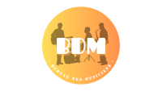
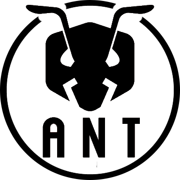

Engagement Bénévole
BDM : Bureau Des Musiciens
- Je suis menbre du bureau des musiciens en tant que trésorier, je prend très a coeur ce role car
le budget dans un club est très important surtout au sien du BDM.
En tant que trésorier du Bureau des Musiciens, j’ai également renforcé
mes compétences en gestion financière et en organisation, tout en coordonnant des événements.
Cette expérience associative m’a appris la rigueur, la gestion des responsabilités et la collaboration avec différents acteurs.

ANT : Accessibilité Numérique pour Tous
- Cette expérience associative a été enrichissante à bien des égards. Elle m'a permis de développer
un éventail d'aptitudes et de qualités précieuses, allant de mes compétences en communication à ma
capacité à gérer le stress et à travailler en équipe. En partageant mes connaissances et en aidant
les autres à comprendre des concepts complexes, j'ai non seulement renforcé mes compétences d'enseignement,
mais j'ai également consolidé ma confiance en moi-même. Cette expérience m'a également rappelé l'importance
de l'empathie et de l'adaptabilité dans toute interaction humaine. Dans l'ensemble, cette expérience associative
a été une étape significative dans mon développement personnel et professionnel, me laissant avec des compétences
et des souvenirs précieux qui guideront mes actions futures.
